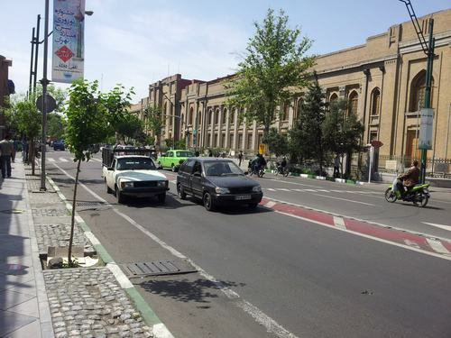
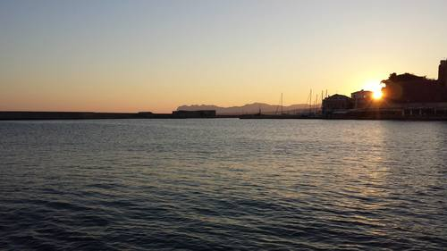
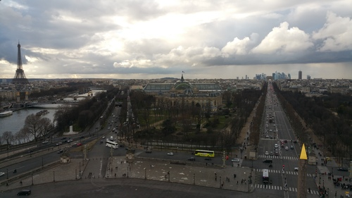
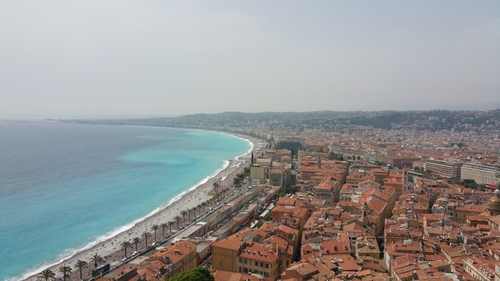
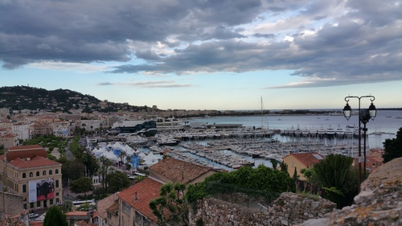
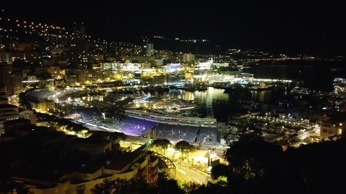

Georgios Methenitis
MSc. Artificial Intelligence
PhD. candidate
Intelligent Systems Group
Centrum Wiskunde & Informatica
Follow @GiorgosMetheWelcome to my personal webpage
I firmly believe that artificial intelligence can slowly, take over all simple tasks humans are forced to deal with on daily basis. Artificial intelligence as a field of study can help humanity move forward faster, if used appropriately. I currently conduct research on how artificial intelligence can benefit future electricity networks and markets. Slowly smart homes will become reality, renewable power generation will overtake traditional ways of power production in quantity. Flexibility and demand-response methods will be used and they have to be used intelligently. My research focuses on multi-agent systems, game theory and learning.
Curriculum Vitae
Georgios Methenitis was born in Athens, in October 1988. He is originally from Evia, a beautiful island in the middle part of Greece.
He graduated from Technical University of Crete in Greece with a 5-year diploma in Electronic and Computer Engineering. In 2012 he completed his diploma thesis in the subject of multi-agent behavior and strategy coordination for the RoboCup Simulation League.
He received his Masters of Science degree after completing a two-years master studies at University of Amsterdam in the subject of artificial Intelligence in December 2014. During his master studies he worked as a teaching assistant at University of Amsterdam, and as an intern at VicarVision, a computer vision company located in Amsterdam. He was also a member of Dutch Nao Team of University of Amsterdam, participating in two major RoboCup competitions.
 Third place in the Iran Open 2013
Third place in the Iran Open 2013
His master thesis, "Evolution of Soft-Robots by Novelty Search", was accepted for publication in GECCO 2015 in Madrid. This work was a cooperation between University of Amsterdam and the Advanced Concepts Team at the European Space Agency, where he completed a 3-month internship.
Since February 2015 he is a PhD candidate at the Intelligent Systems Group at Centrum Wiskunde & Informatica (CWI) in Amsterdam, working on Intelligent solutions for future electricity networks.
You can download my CV from here:

Publications
Conference Proceedings
Thesis
Methenitis, Georgios. "Evolution of Soft Robots by Novelty Search." (2014).
Other
Personal
I love travelling and taking pictures of nice sceneries not only in the places I am visiting, but also in my everyday life.
Tehran, Iran, April 2013

{kind=link}
Chania, Greece, July 2013

{kind=link}
Paris, France, February 2015

{kind=link}
Nice, France, May 2015

{kind=link}
Cannes, France, May 2015

{kind=link}
Monte Carlo, Monaco, May 2015

{kind=link}
Contact
Email: georgios [dot] methenitis [at] cwi [dot] nl
Address: Science Park 123, 1098 XG Amsterdam, The Netherlands
Room: M392
Telephone: +31(0)20 592 4198